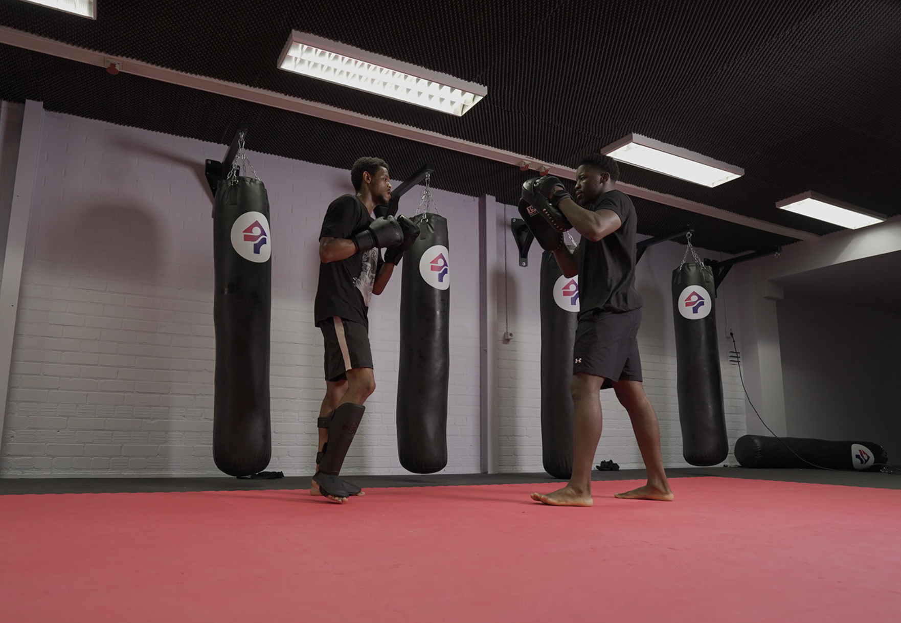
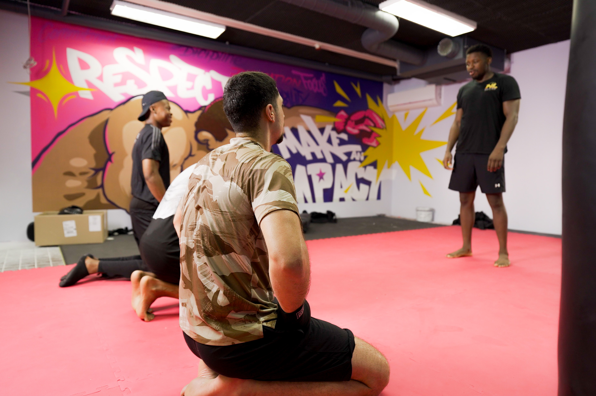
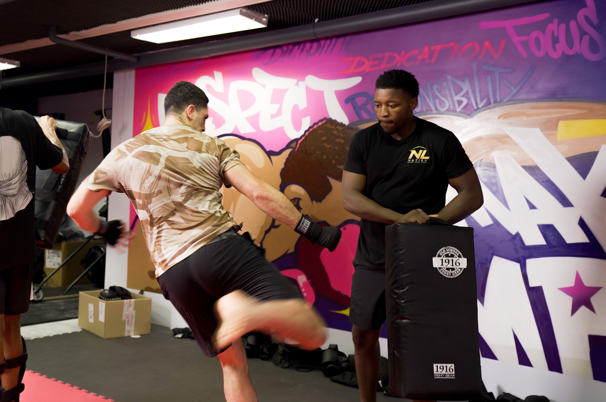

Voor gemeenten en zorgaanbieders
Individuele trajecten
Eén-op-één begeleiding voor jongeren in een zorg- of gemeentelijk traject, gericht op betrokkenheid, dagritme en gedrag.
Bekijk individuele trajectenKickboksen en persoonlijke begeleiding
NL Motion helpt gemeenten, scholen en zorgorganisaties in de regio Arnhem om jongeren van 12 tot 23 jaar te laten groeien in zelfvertrouwen, discipline en weerbaarheid. Plan een vrijblijvend kennismakingsgesprek.
We werken samen met onder andere
Je kent de jongeren voor wie het reguliere aanbod niet aanslaat. Ze verschijnen niet op afspraken, klappen dicht zodra het over gevoel gaat, of haken af nog voordat een traject op gang komt.
In je caseload zitten trajecten die op papier kloppen maar in de praktijk stilvallen. De motivatie ontbreekt, het vertrouwen is er niet, en een spreekkamer voelt voor deze jongeren als de plek waar het misgaat.
Wat mist, is een omgeving waarin een jongere eerst iets opbouwt en pas daarna begint te praten. Precies daar begint de aanpak van NL Motion.
De aanpak
De training kost inspanning en levert direct iets op, waardoor een jongere blijft komen en zich op zijn gemak gaat voelen.
Tijdens het bewegen komen de gesprekken vanzelf op gang, omdat een jongere naast je traint in plaats van tegenover je zit.
Vaste afspraken, een herkenbare opbouw en meetbare stappen geven het traject een ritme waar een jongere op kan bouwen.
Diensten
Werk je vanuit een organisatie of kom je voor jezelf? Kies hieronder je situatie, dan tonen we alleen de diensten die daarbij horen.

Voor gemeenten en zorgaanbieders
Eén-op-één begeleiding voor jongeren in een zorg- of gemeentelijk traject, gericht op betrokkenheid, dagritme en gedrag.
Bekijk individuele trajecten
Voor organisaties en scholen
Trainingen en workshops voor groepen jongeren, waarin beweging de ingang is voor samenwerking, grenzen en zelfvertrouwen.
Bekijk groepstrainingen
Voor particulieren
Persoonlijke training voor wie op eigen initiatief aan conditie, kracht en discipline wil werken.
Bekijk personal training
Over ons
Nathan is actief wedstrijdvechter met tien jaar sportervaring en daarnaast zorgprofessional. Die twee werelden komen bij NL Motion samen. Hij weet wat een zware training met je doet, en hij weet wat een jongere nodig heeft om zich te openen.
Voor jongeren die vastlopen zet hij die combinatie bewust in: de discipline en het respect uit de sportschool, gekoppeld aan de rust en het geduld van iemand die dagelijks met jongeren werkt. Beweging is bij ons het middel, de ontwikkeling van de jongere is altijd het doel.
Resultaten
Een jongere die bij ons nauwelijks op afspraken kwam, staat nu elke week op de training. De betrokkenheid die daar ontstaat, nemen we mee in de rest van het traject.
Nathan spreekt de taal van deze jongeren zonder de kaders los te laten. Voor ons is dat het verschil tussen een traject dat stilstaat en een traject dat beweegt.
Thuis merken we dat er minder botst. Mijn zoon heeft iets waar hij naartoe leeft en waar hij trots op is, en dat straalt door in de rest van de week.
Veelgestelde vragen
Elke training verloopt onder begeleiding van Nathan, met vaste regels en een opbouw die past bij het niveau van de jongere. NL Motion beschikt over een geldige VOG en een aansprakelijkheidsverzekering, en werkt binnen de afspraken die met de opdrachtgever zijn gemaakt.
We leggen per jongere concrete observaties vast, zoals opkomst, betrokkenheid en gedrag tijdens en na de training. Die bevindingen delen we in een vorm die aansluit op jullie eigen rapportage.
De kosten hangen af van de vorm, de duur en het aantal jongeren. Na een kennismakingsgesprek ontvang je een heldere offerte, zodat je vooraf weet waar je aan toe bent.
Een traject begint met een kennismakingsgesprek waarin we de situatie en de doelen bespreken. Daarna volgt een voorstel, en bij akkoord plannen we de eerste trainingen in overleg in.
Een kennismakingsgesprek kost niets en geeft direct duidelijkheid over wat er mogelijk is voor jouw organisatie.